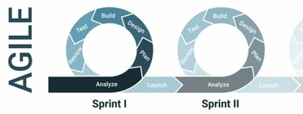
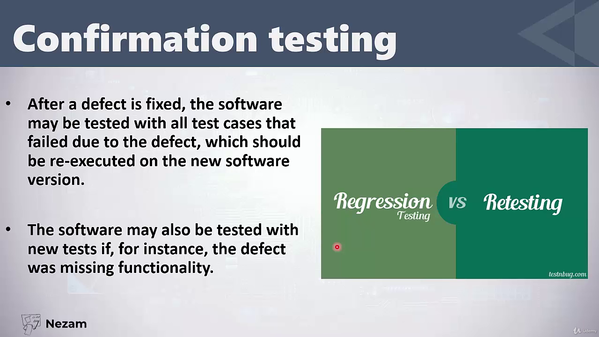
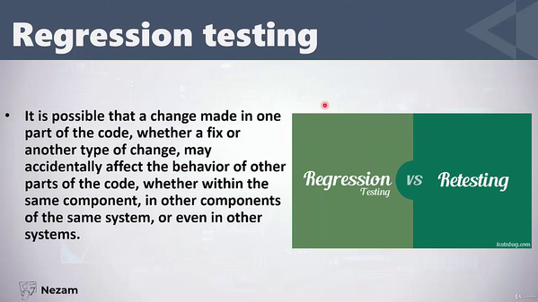
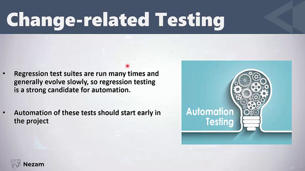
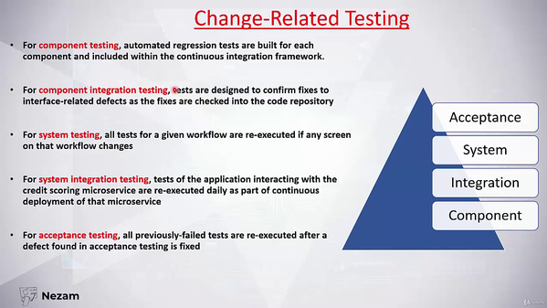

regression testing
==================
- verifing existing, expected, app functionality on new features/bug-fixes
- performed to ensure existing functionality is preserved on new code introduction, or bug-fix is applied.
- most widely used test type; different from re-testing, purpose is different
- test cases performed after new code, app functionality or bugfixes are intorduced;
- making sure old code doesnt crash after updates
- parts of the system can be hit if shared code is touched, and regression testing is used to monitor this
when:
1. defect fix
2. new feature
3. code refactoring
4. config changes
techniques for selectin test cases to run:
1. select all test cases; if 100% automated then ok
2. test areas which can be impacted; test only changed modules and their dependencies
3. test cases by priority; only critical functionality
how to select regression test cases:
1. by usage frequency
2. high priority
3. integration tests
4. as per module; select impacted modules
regression testing in `agile`
============================
- dev. cycle goes in 'sprints' of 'user stories'; which are ~2week dev. cycles of requirements implementation
- regression cases from prev. sprints are automated with automation tools; automated regression suites



